Differential Calculus#
From the introduction, Calculus is the study and quantifying of change. If we have two quantities that are related in a way such that the change in one creates a change in the other, there are two main questions we can ask. The first question is, what is the rate at which the dependent quantity changes as we change the independent quantity? The second question is, what is the total change of the dependent quantity as we change the independent quantity over some interval of values?
We tend to interpret this study and quantifying of change into two graphically oriented interpretations, the Tangent Problem and the Area Problem. The Tangent Problem answers the first question, “What is the rate at which the dependent quantity changes as we change the independent quantity?” which is at the heart of Differential Calculus.
The Tangent Problem#
The Statement of The Tangent Problem#
The statement of The Tangent Problem is very simple. Given a curve and a point on the curve find the slope of the tangent line to the curve at the given point. Graphically, in the image below find the slope of the red line.
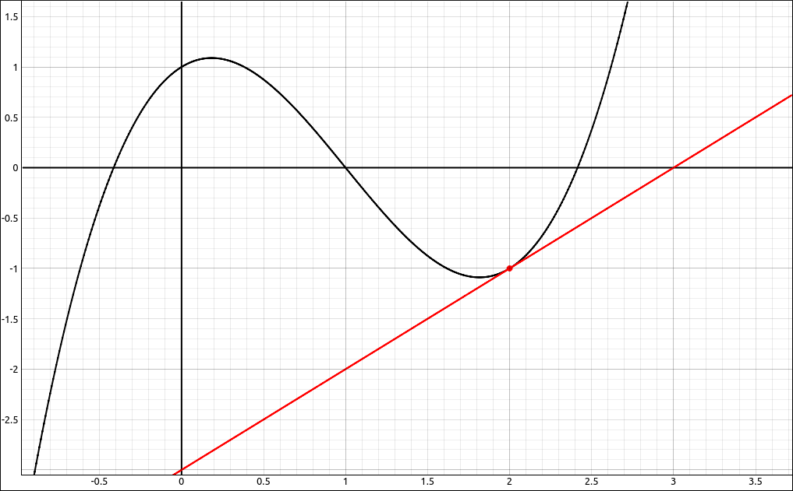
Tangent Problem Visualization#
Solving The Tangent Problem#
Solving The Tangent Problem seems fairly easy as well, if we had the equation of the tangent line, say \(y = mx+b\) then the slope is just \(m\). If we had two points on the line, say \((x_1, y_1)\) and \((x_2, y_2)\) then we could calculate the slope as \(m = \frac{y_2-y_1}{x_2-x_1}\). The problem is that we don’t have either, we have only one point on the line so the slope calculation is out, and we don’t have an equation for the line, so manipulating it into slope-intercept form and reading off the slope is out as well. Another alternative is that we can calculate the equation of a line if we had a single point on the line (which we do) and the slope of the line (which we don’t), that is what we are looking for in the first place. Hence, we need to take a different approach.
The big problem here is that we only have one point on the line, if we had two points on the line we could calculate the slope of the line. So as with many processes in mathematics we will approximate what we want with something we can calculate. Take two points on the curve and draw a line between them. This line will have two points and hence we can calculate the slope of the line. For example,
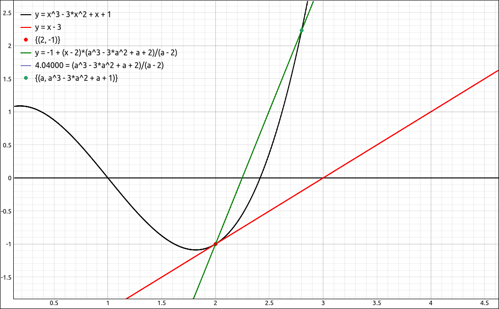
Tangent Line and Secant Line to the Curve#
The green line is our approximation of the tangent line. Since it is drawn between two points on the curve we call it a secant line to the curve. This example is using the function \(f(x) = x^{3} - 3 x^{2} + x + 1\) but that is not important here, the same would be done for any function. The slope of this secant line is 4.04, as can be seen in the legend of the plot. Obviously the secant line here is not a very good approximation of the tangent line, so we will move the second point closer to the first point. Now the slope of the secant line is 2.75 and the secant line is a closer approximation to the tangent line.
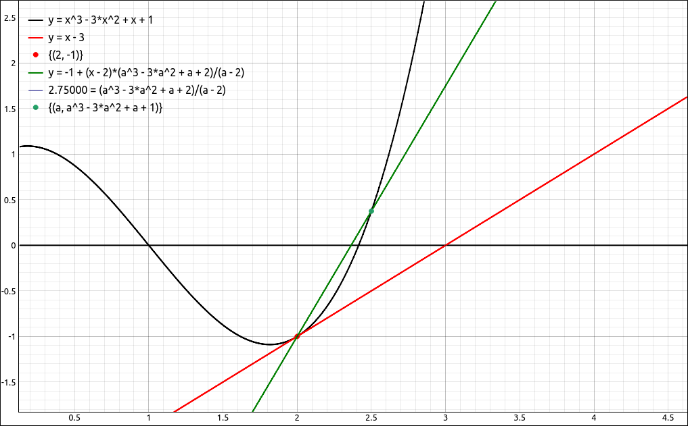
Secant Line Approaching the Tangent Line#
Move the second point closer to the first point. Now the slope of the secant line is 1.64 and the secant line is a closer approximation to the tangent line.
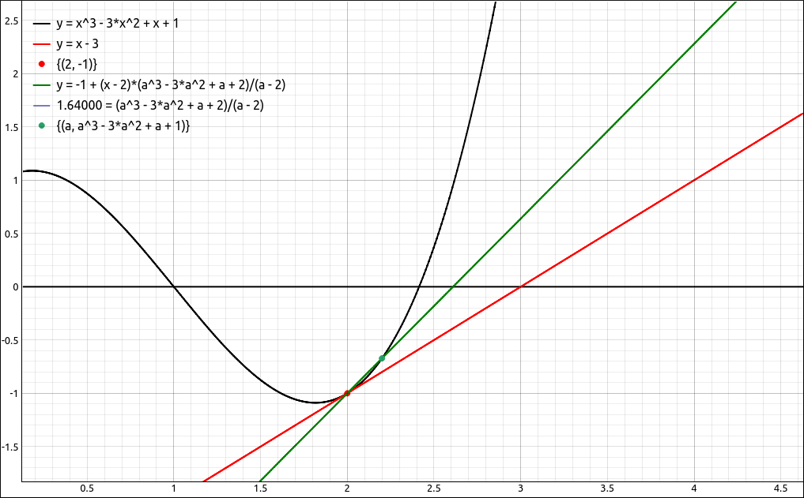
Secant Line Approaching the Tangent Line#
Move the second point closer to the first point. Now the slope of the secant line is 1.31 and the secant line is a closer approximation to the tangent line.
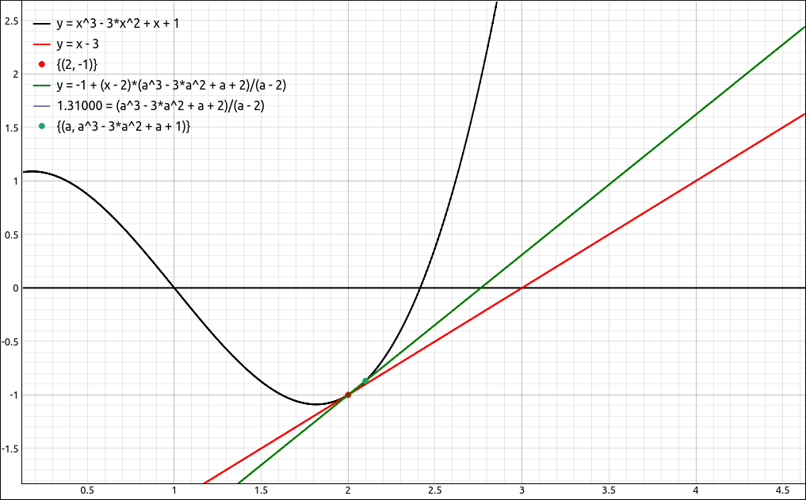
Secant Line Approaching the Tangent Line#
Move the second point closer to the first point. Now the slope of the secant line is 1.1525 and the secant line is a closer approximation to the tangent line.
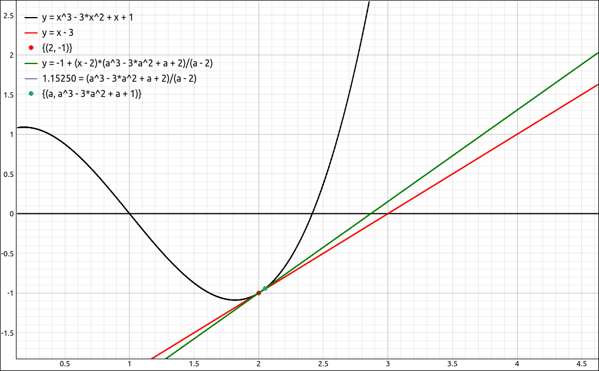
Secant Line Approaching the Tangent Line#
Move the second point closer to the first point. Now the slope of the secant line is 1.0604 and the secant line is a closer approximation to the tangent line.
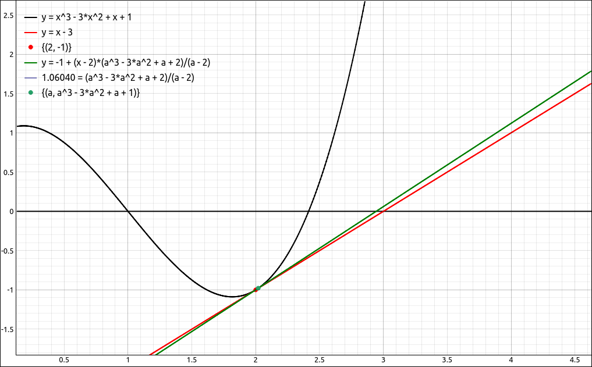
Secant Line Approaching the Tangent Line#
Move the second point closer to the first point. Now the slope of the secant line is 1.01503 and the secant line is a closer approximation to the tangent line.
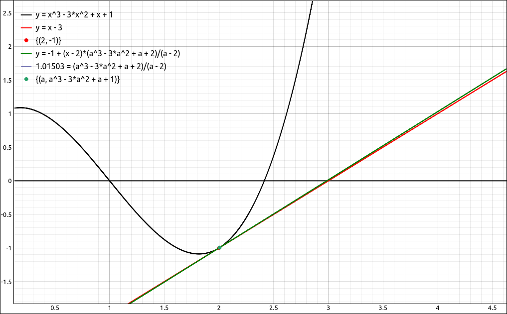
Secant Line Approaching the Tangent Line#
Move the second point closer to the first point. Now the slope of the secant line is 1.006 and the secant line is a closer approximation to the tangent line.
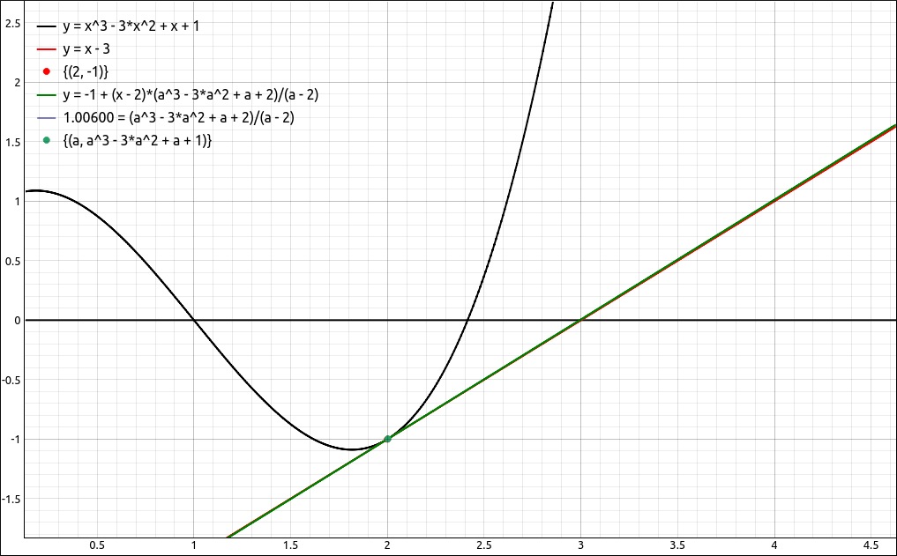
Secant Line Approaching the Tangent Line#
Move the second point closer to the first point. Now the slope of the secant line is 1.003 and the secant line is a closer approximation to the tangent line.
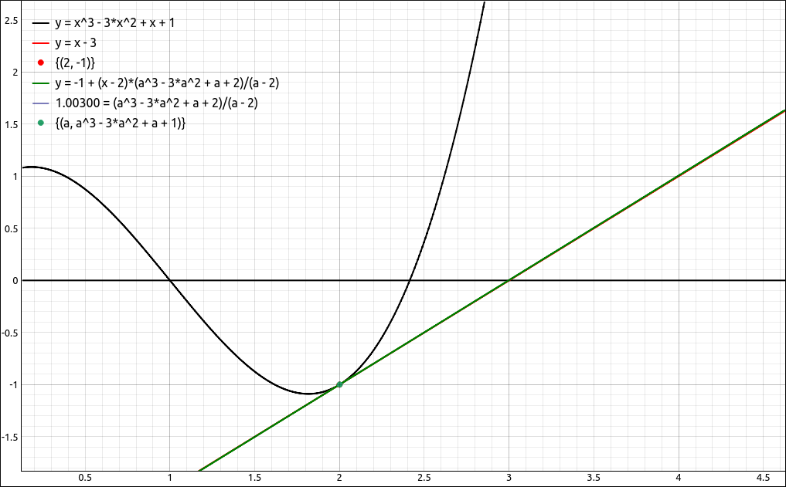
Secant Line Approaching the Tangent Line#
Move the second point closer to the first point. Now the slope of the secant line is 1.0003 and the secant line is a closer approximation to the tangent line.
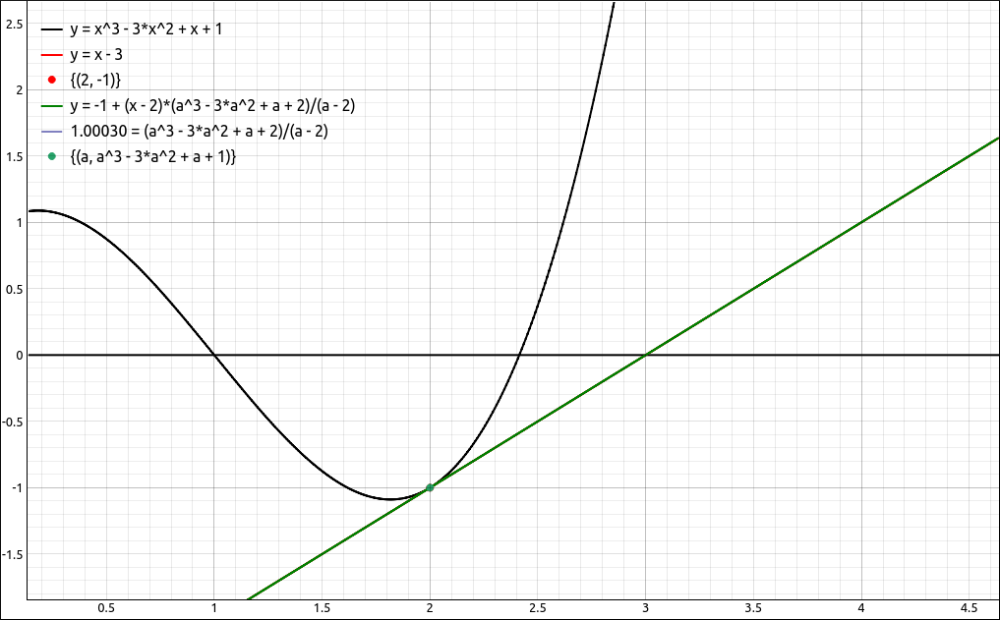
Secant Line Approaching the Tangent Line#
The final secant line we used is very close to the tangent line and our sequence of secant line slopes, 2.75, 1,64, 1.31, 1.1525, 1.0604, 1.01503, 1.006, 1.003, 1.0003 seem to be converging to 1. So we would say that the slope of this tangent line is 1.
Now let’s look at this process in more generality, let’s say we have a generic function \(f(x)\) and a point on the curve. The point on the curve is the red point, that is the point of interest, say it is at \(x = a\), hence the coordinates of the red point are \((a, f(a))\). The green point is the second point on the curve to create the secant line so that we can calculate a slope, we will keep its general, \((x, f(x))\).
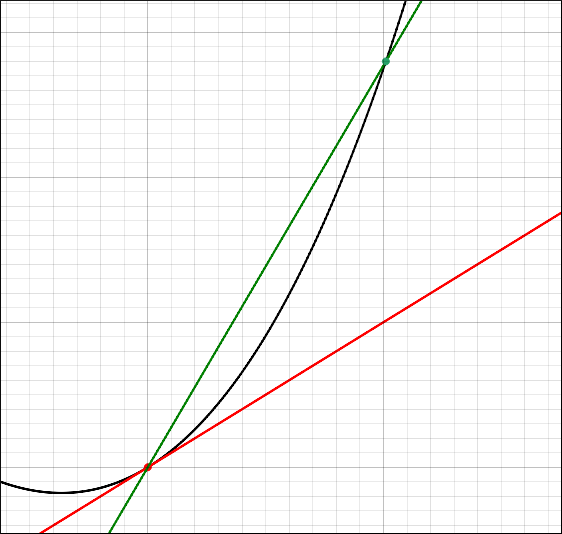
Tangent Line Slope Derivation#
Now the slope of the green secant line is,
Since a is a constant we can take any value of x that is not equal to a and calculate a slope of the secant line. What we did in the example above was to get better and better approximations to the slope of the tangent line by taking values of x closer and closer to a, that is, we let x approach a, written as \(x \to a\). In Calculus, when we let one quantity get closer to another without equaling it we call that a limit, which we will formally discuss in later sections. Mathematically we write this as,
and it is how we define the slope of the tangent line to a function. An equivalent formulation that is sometimes easier to calculate is if we let \(h = x-a\) then \(x = a + h\) and letting \(x \to a\) is the same thing as letting \(h \to 0\), our formula becomes,
So once we establish some details on the limit we can algebraically calculate the slope of a tangent line.
An Example of The Tangent Problem#
This is all well and good, but you know there is something missing here. Finding the slope of a tangent line to a curve is a nice academic exercise, but we would not center an entire area of mathematics around it if there were not numerous applications to this process. We will start out with an example to help us move into a more general framework. The graph below represents the distance a person riding a motor-scooter is from their starting point. The horizontal axis is time in hours and the vertical axis is distance in tens of miles.
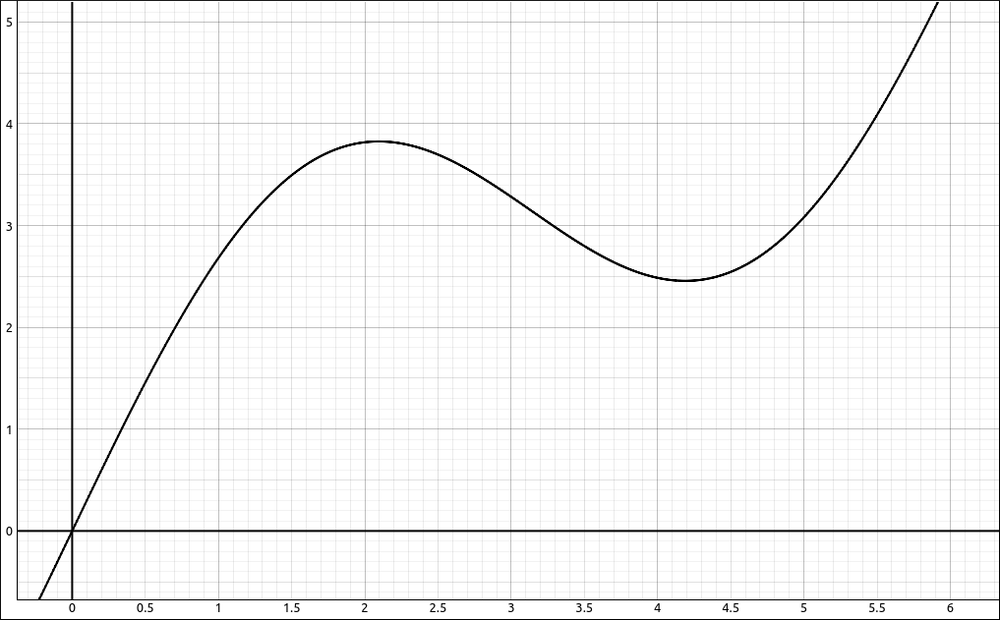
Distance Verses Time Graph of the Position of a Person on a Motor-Scooter#
So at time zero they get on their motor-scooter at home and the distance they are away from home is 0. They travel for an hour and they are about 27 miles away from home. Two hours into the trip they are about 38 miles away from home. A little over two hours into the trip they turn onto another road that circles back closer to home. At about 4.25 hours that turn onto another road that again takes them further away from home, and so on.
Let’s put in a tangent line at one hour and a secant line from one hour to about 2.25 hours.
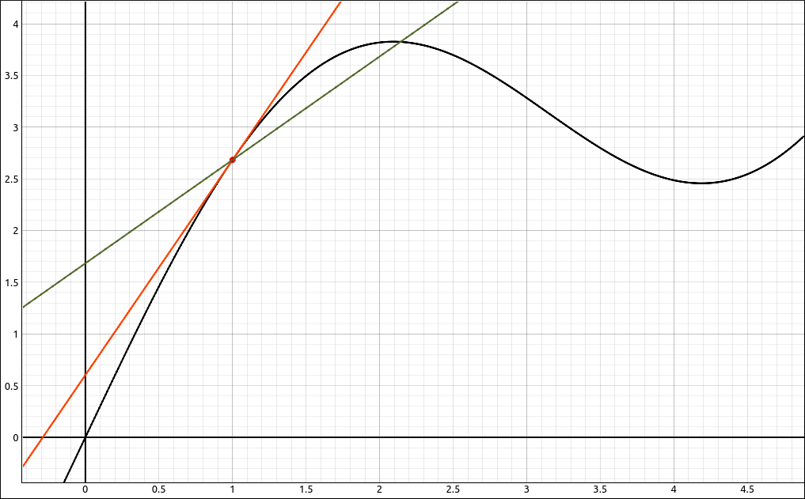
Average Velocity and Instantaneous Velocity#
The slope of the secant line is
The units for the y values are miles and the units for the x values are hours so the ratio is miles/hour and hence a velocity. So the slope of a secant line is representing the average velocity of the motor-scooter from 1 hour to 2.25 hours into the trip. As we let the second point approach the first we get average velocities of the motor-scooter on smaller time intervals. In the limit, we get a velocity over an infinitesimal time period or better yet at an instance in time, this is the slope of the tangent line which is the instantaneous velocity of the motor-scooter at one hour into the trip.
What Does The Tangent Problem Mean in General#
Let’s take the previous example one step further. In the previous example our slopes were velocities. A velocity is a rate of change of distance with respect to time. The distance was our y variable and our time was the x variable. The y variable is our dependent variable and our x variable is our independent variable. Variables represent quantities, in many cases physical quantities. Obviously there is a relationship between the x and y variables, in the above example it was the motor-scooter. So if we have a relationship between two quantities, one is an independent quantity and the other is a dependent quantity (dependent on the value of the independent quantity) then the slope of the slopes of the secant lines are average rates of change of the dependent quantity with respect to the dependent quantity and the slope of the tangent line is the instantaneous rate of change of the dependent quantity with respect to the independent quantity.
Say we know the velocities of a rocket during its flight, then the slope of the tangent line represents the rate at which the velocities are changing, that is, its acceleration.
Say we know the relationship between how many items a company produces and the revenue it gets from the sale of those items. Then the slope of the tangent line represents the rate at which the revenue is changing (up or down) for a particular number of items created and sold.
Say we know amount of water being pumped into a pool over time, then the slope of the tangent line would be the pumping capacity (gal/min) of the pump.
The list goes on and on…
Limit Tutorials & Examples#
Limits
Precise Definitions of the Limit
Derivative Tutorials & Examples#
Derivatives